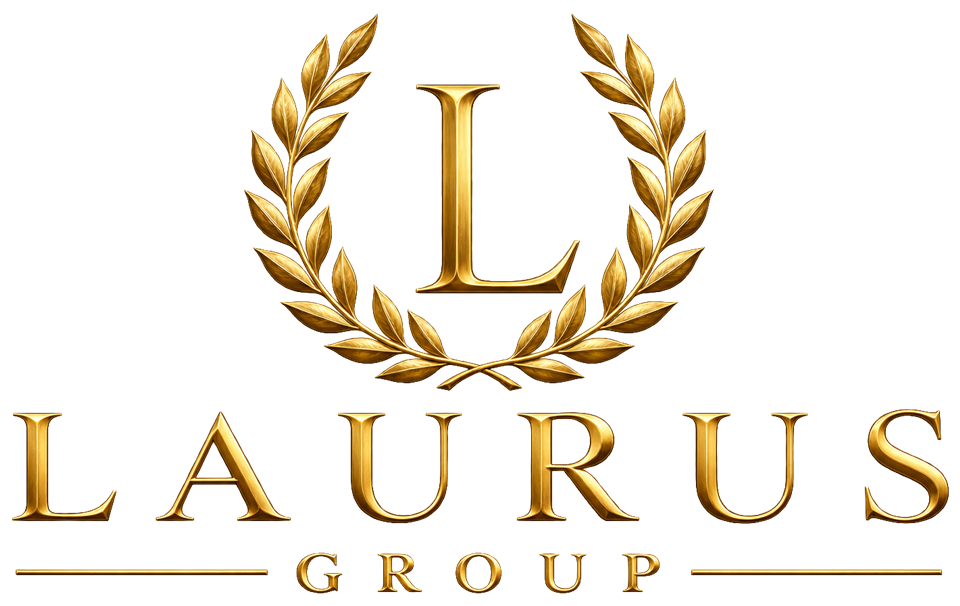
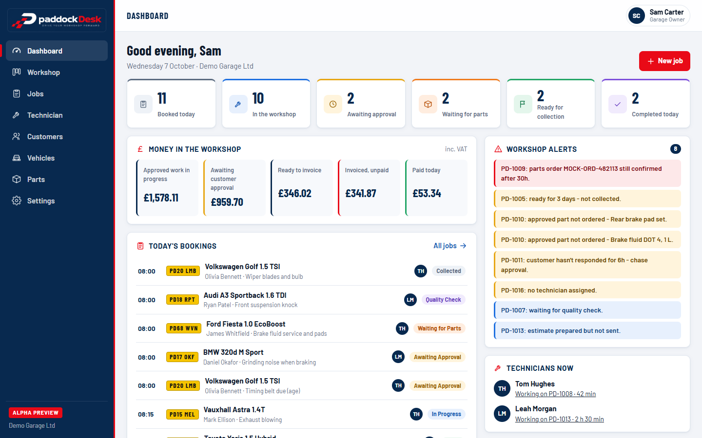

Automotive

Professional mobile diagnostics, servicing and vehicle support — Laurus Group's first automotive operating company.

Laurus Group
Laurus Group is the parent company behind our businesses in Automotive, Technology, People and Engineering Solutions — built on disciplined execution, continuous improvement and LOS, the Laurus Operating System that connects them.
Explore Our BusinessesOur Businesses
One parent company, four connected business areas — sharing the same technology backbone and the same principle: evidence over assumption, systems over chaos.
Automotive
Professional mobile diagnostics, servicing and vehicle support — Laurus Group's first automotive operating company.
Technology
Laurus Technology — developer of LOS, the Laurus Operating System. The shared technology backbone being developed across Laurus businesses, and built to power external companies too.
People
Laurus Recruitment — specialist recruitment connecting skilled people with high-performance, technical and growing businesses, powered by LOS.
Technology · PaddockDesk
PaddockDesk — connected workshop management by Laurus Technology, developed using the Laurus Operating System approach.
Engineering Solutions
Laurus Group's engineering business provides specialist engineering and composites support to companies, motorsport teams and technical organisations — delivered on a contract and subcontract basis.
Proof of Model
Our most developed operating business — a real, live example of the Laurus model in action.
Mobile Diagnostics
Professional vehicle diagnostics and servicing, delivered at the customer's home or workplace.
My Garage
A live digital vehicle record customers use to track health, MOT status and recommendations.
LOS-Backed Operations
Internal workflows already run on the early Laurus Operating System.
Technology · Laurus Technology
Developed by Laurus Technology, LOS is the shared technology backbone being built across Laurus businesses — one connected platform for people, work, quality, communication and business visibility, designed to power external companies too.
People
Attendance, training, recruitment and workforce.
Work
Jobs, works orders, allocation and progress.
Quality
Inspections, NCRs, compliance and continuous improvement.
Visibility
Dashboards, priorities, performance and operational actions.
One shared architecture, adapted across every Laurus business.
Most Developed
Manufacturing
Works orders, attendance, training, inspections, NCRs and live production dashboards.
Live
Automotive
Customer portals, vehicle records, diagnostics workflows and operational action centres at Podium Vehicle Solutions.
Live
People & Recruitment
Candidate and employer portals, staff review workflows and recruitment operations at Laurus Recruitment.
Each Laurus business uses the modules relevant to it, while sharing the same underlying LOS architecture.
LOS already supports real day-to-day operations inside Laurus businesses — including Podium Vehicle Solutions and Laurus Recruitment — and is extending further as more workflows come online.
The same foundation can power independent businesses outside the group.
MM Recruitment Ltd is an independent recruitment business — it is not a Laurus Group company. Its website and recruitment portal are powered by Laurus Technology and LOS. Visit MM Recruitment Ltd →
Interested in how LOS could support your own organisation? Talk to Laurus Group about Laurus Technology and LOS.
Get In TouchLaurus Technology · LOS-Powered Product
PaddockDesk brings reception, jobs, technicians, vehicle health, parts tracking, invoicing and customer handover into one connected workshop system, developed using the Laurus Operating System approach.
In active alpha development — informed by real workshop operations at Podium Vehicle Solutions.

One connected system across the whole workshop journey, instead of disconnected spreadsheets and point tools.
Reception & Booking
Vehicles checked in and jobs opened against a single connected record.
Job Card & Technician
Diagnostics, labour, parts and technician progress tracked against one job, on desktop or phone.
Health, Invoice & Handover
A structured vehicle health report, invoice and payment status carried through to collection.
"We will never stop learning. We will never stop improving. We will never stop earning trust."
Every Laurus Group business is built around professional systems, clear communication, customer trust and controlled improvement.
Winner's Mindset
High-performance thinking applied to everyday business.
Continuous Improvement
Evidence over assumption. Systems over chaos. Always refining.
Minimum Resource. Maximum Useful Performance.
Every resource, every hour, working toward real outcomes.
A trusted standard for approved companies and partners who meet the Laurus principles of quality, reliability, communication and continuous improvement.
For Laurus Group, Laurus Technology and LOS enquiries: